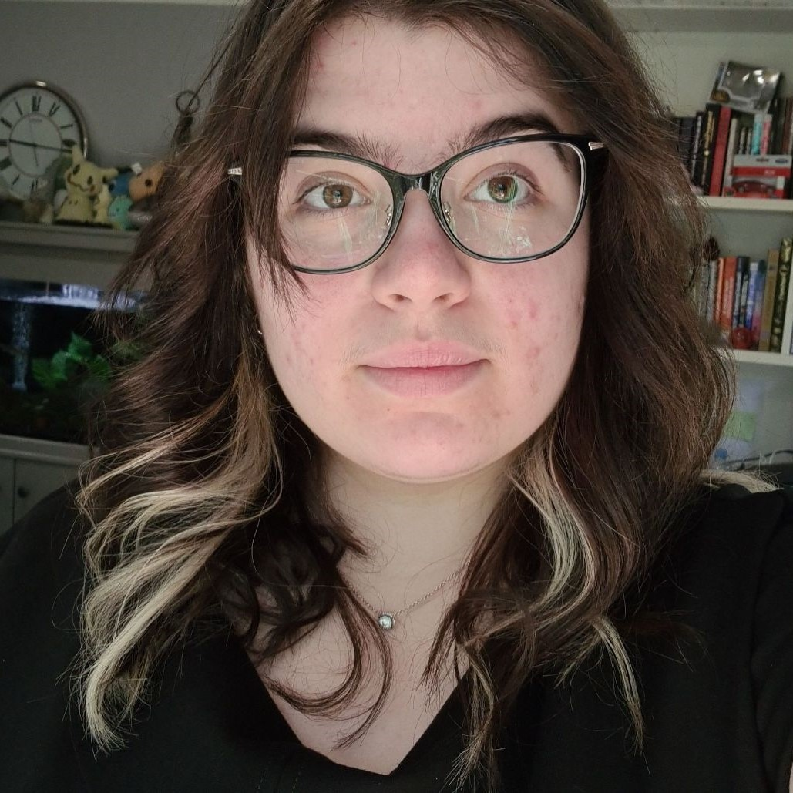

About Me!
Hello there! My name is Zahlia (aka Bellesaurus) and I am an aspiring
cybersecurity professional! I am studying a Bachelor of IT majoring in
Software Technology at Macquarie University looking to graduate by
2024.
Work Experience: I have worked as a CRM Manager and have been
incredibly privileged to learn a lot about databases as well as what
IT looks like from inside a medium sized business. I have also worked
as a Student Ambassador talking to future students about what it is
like to study at Macquarie University.
Passions: My current passions include competing in
hackathons, coding (or at least trying to code), taking care of my
animals as well as reading, cooking and crafting. I have also very
recently started dabbling in hardware items after getting a Raspberry
Pico from a recent event and building my own custom keyboards.